Metric 02 - Current Ratio
April 8, 2022

Metric Construction
Definition & Interpretation
$$Current \: Asset \: Ratio = \frac{Current \: Assets}{Current \: Liabilities}$$
The current ratio is used to measure the overall liquidity of a nonprofit organization.
In its simplest form, it shows how many dollars of current assets an organization has to cover its current obligations. The higher the ratio, the more liquid the organization.
As a rule of thumb, organizations should strive for a current ratio of 1.0 or higher. An organization with a ratio of 1.0 would have one dollar of assets to pay for every dollar of current liabilities.
Variables
Notes: This data is only available for organizations that file a full 990, not for EZ filers.
Numerator: (Cash + short-term investments + current receivables + inventories + prepaid expenses) * On 990: (Part X, line 1B) + (Part X, line 2B) + (Part X, line 3B) + (Part X, line 4B) + (Part X, line 8B) + (Part X, line 9B) - SOI PC EXTRACTS: nonintcashend, svngstempinvend,pldgegrntrcvblend, accntsrcvblend, invntriesalesend, prepaidexpnsend * On EZ: Part I, line 22 [cash and short-term investments only]
Denominator: (Accounts payable + grants payable) * On 990: (Part X, line 17B) + (Part X, line 18B) -SOI PC EXTRACTS: accntspayableend+grntspayableend * On EZ: Not available
|Note: The EZ form only asks filers to report on cash, savings and investments; all receivable accounts, inventories, and prepaid expenses are reported in the line item “other assets” (Part II, line 24), and details are reported in Schedule O. Similarly, the EZ form asks filers to report on total liabilities, with details about payable accounts reported in Schedule O
Tabulation
## Error in `$<-.data.frame`(`*tmp*`, currentratio, value = numeric(0)): replacement has 0 rows, data has 6168Standardize Scales
Check high and low values to see what makes sense.
A ratio below 0 is odd because it means liabilities are negative and assets are positive. Negative liabilities only happen when an organization overpays for a liability, and don’t count towards the organization’s assets. Consequently, we’ll cap them at 0.
Metric Scope
Score describes whether the metric applies to all 990 filers, or only the full 990 filers (if the variable is not included on the 990-EZ form).
Tax data is available for both full 990 and 990-EZ filers, so this metric describes all orgs.
Scope codes:
- PZ: Both 990 and 990-EZ filers
- PC: Only full 990 (public charity or PC) filers only
- EZ: Only 990-EZ filers
Reference
Any cited works here…
Descriptive Statistics
Put Debt to Asset Ratio on a scale of -10,000 to +20,000.
Convert everything else to thousands of dollars.
# rescale Current Ratio where 1 = 10,000
core %>%
mutate( currentratio = currentratio * 10000,
totrevenue = totrevenue / 1000,
totfuncexpns = totfuncexpns / 1000,
lndbldgsequipend = lndbldgsequipend / 1000,
totassetsend = totassetsend / 1000,
totliabend = totliabend / 1000,
totnetassetend = totnetassetend / 1000 ) %>%
select( STATE, AGE, NTEE1, NTMAJ12,
currentratio, totrevenue, totfuncexpns, lndbldgsequipend,
totassetsend, totliabend, totnetassetend ) %>%
stargazer( type = s.type,
digits=0,
summary.stat = c("min","p25","median",
"mean","p75","max", "sd") )
## Error: Problem with `mutate()` input `currentratio`.
## x object 'currentratio' not found
## i Input `currentratio` is `currentratio * 10000`.What proportion of orgs have a Current Ratio of zero (no outstanding liabilities)?
In the sample, NaN percent of the organizations have a Current Ratio of zero, meaning they carried no debt. These organizations are dropped from subsequent graphs to keep the visualizations clean. The interpretation of the graphics should be the distributions of Debt to Asset Ratio for organizations that carry debt.
Filter out cases with Current Ratio=0 because they dominate the graphics otherwise.
# drop cases where Current Ratio=0
core2 <- core
core2$currentratio[ core2$currentratio == 0 ] <- NA
## Error in `$<-.data.frame`(`*tmp*`, currentratio, value = logical(0)): replacement has 0 rows, data has 6168Create quantile groups:
###
### ADD QUANTILES
###
### function create_quantiles() defined in r-functions.R
core2$exp.q <- create_quantiles( var=core2$totfuncexpns, n.groups=5 )
core2$rev.q <- create_quantiles( var=core2$totrevenue, n.groups=5 )
core2$asset.q <- create_quantiles( var=core2$totnetassetend, n.groups=5 )
core2$age.q <- create_quantiles( var=core2$AGE, n.groups=5 )Current Ratio Density
ggplot( core2, aes(x = currentratio )) +
geom_density( alpha = 0.5, fill="darkorange" ) +
xlim( -0.1, 1 ) +
xlab( variable.label ) +
theme( axis.title.y=element_blank(),
axis.text.y=element_blank(),
axis.ticks.y=element_blank() )
## Error in FUN(X[[i]], ...): object 'currentratio' not found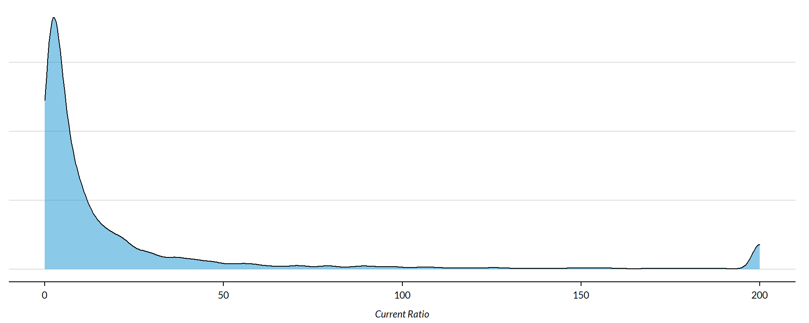
Current Ratio by NTEE Major Code
core3 <- core2 %>% filter( ! is.na(NTMAJ12) )
table( core3$NTMAJ12) %>% sort(decreasing=TRUE) %>% kable()| Var1 | Freq |
|---|---|
| Human Services | 4007 |
| Public Benefit | 1718 |
| Health | 165 |
| Environmental | 94 |
| Arts | 85 |
| Religion | 65 |
| Education | 6 |
| Hospitals | 4 |
| Mutual Benefit | 3 |
| Unknown | 1 |
| International | 0 |
| Universities | 0 |
t <- table( factor(core3$NTMAJ12) )
df <- data.frame( x=Inf, y=Inf,
N=paste0( "N=", as.character(t) ),
NTMAJ12=names(t) )
ggplot( core3, aes( x=currentratio ) ) +
geom_density( alpha = 0.5, fill="blue" ) +
xlim( -0.1, 1 ) +
labs( title="Nonprofit Subsectors" ) +
xlab( variable.label ) +
facet_wrap( ~ NTMAJ12, nrow=3 ) +
theme_minimal( base_size = 15 ) +
theme( axis.title.y=element_blank(),
axis.text.y=element_blank(),
axis.ticks.y=element_blank(),
strip.text = element_text( face="bold") ) + # size=20
geom_text( data=df,
aes(x, y, label=N ),
hjust=2, vjust=3,
color="gray60", size=6 )
## Error in FUN(X[[i]], ...): object 'currentratio' not foundCurrent Ratio by Region
| Var1 | Freq |
|---|---|
| Midwest | 1582 |
| Northeast | 1501 |
| South | 1815 |
| West | 1233 |
t <- table( factor(core3$Region) )
df <- data.frame( x=Inf, y=Inf,
N=paste0( "N=", as.character(t) ),
Region=names(t) )
core2 %>%
filter( ! is.na(Region) ) %>%
ggplot( aes(currentratio) ) +
geom_density( alpha = 0.5, fill="blue" ) +
xlab( "Census Regions" ) +
ylab( variable.label ) +
facet_wrap( ~ Region, nrow=3 ) +
theme_minimal( base_size = 22 ) +
theme( axis.title.y=element_blank(),
axis.text.y=element_blank(),
axis.ticks.y=element_blank() ) +
geom_text( data=df,
aes(x, y, label=N ),
hjust=2, vjust=3,
color="gray60", size=6 )
## Error in FUN(X[[i]], ...): object 'currentratio' not found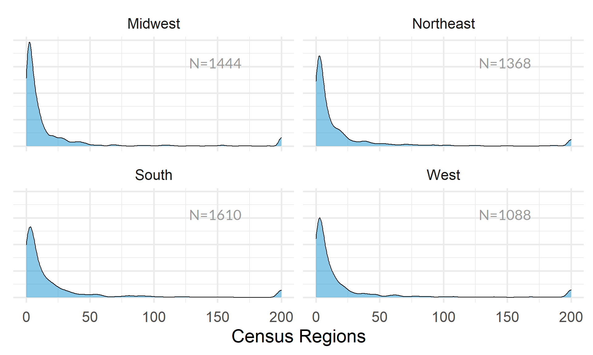
| Var1 | Freq |
|---|---|
| East North Central | 1081 |
| East South Central | 331 |
| Middle Atlantic | 998 |
| Mountain | 340 |
| New England | 503 |
| Pacific | 893 |
| South Atlantic | 1011 |
| West North Central | 501 |
| West South Central | 473 |
t <- table( factor(core3$Division) )
df <- data.frame( x=Inf, y=Inf,
N=paste0( "N=", as.character(t) ),
Division=names(t) )
core2 %>%
filter( ! is.na(Division) ) %>%
ggplot( aes(currentratio) ) +
geom_density( alpha = 0.5, fill="blue" ) +
xlab( "Census Sub-Regions (10)" ) +
ylab( variable.label ) +
facet_wrap( ~ Division, nrow=3 ) +
theme_minimal( base_size = 22 ) +
theme( axis.title.y=element_blank(),
axis.text.y=element_blank(),
axis.ticks.y=element_blank() ) +
geom_text( data=df,
aes(x, y, label=N ),
hjust=2, vjust=3,
color="gray60", size=6 )
## Error in FUN(X[[i]], ...): object 'currentratio' not found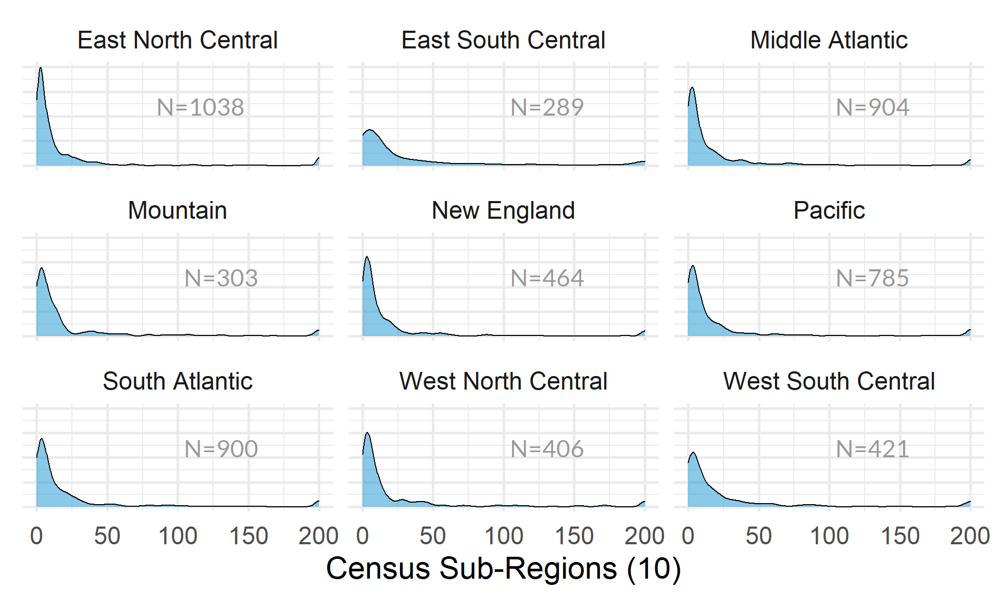
Current Ratio by Nonprofit Size (Expenses)
ggplot( core2, aes(x = totfuncexpns )) +
geom_density( alpha = 0.5, fill="darkorange" ) +
xlim( quantile(core2$totfuncexpns, c(0.02,0.98), na.rm=T ) )
core2$totfuncexpns[ core2$totfuncexpns < 1 ] <- 1
# core2$totfuncexpns[ is.na(core2$totfuncexpns) ] <- 1
if( nrow(core2) > 10000 )
{
core3 <- sample_n( core2, 10000 )
} else
{
core3 <- core2
}
jplot( log10(core3$totfuncexpns), core3$currentratio,
xlab="Nonprofit Size (logged Expenses)",
ylab=variable.label,
xaxt="n", xlim=c(3,10) )
## Error in lowess(x2[ok] ~ x1[ok]): invalid input
axis( side=1,
at=c(3,4,5,6,7,8,9,10),
labels=c("1k","10k","100k","1m","10m","100m","1b","10b") )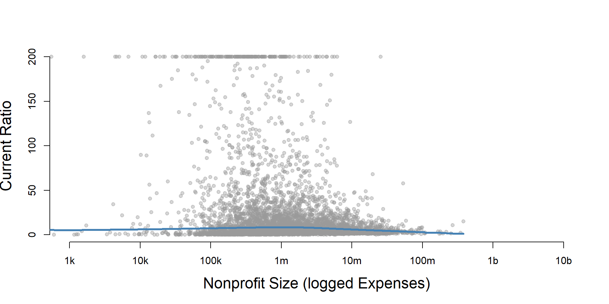
core2 %>%
filter( ! is.na(exp.q) ) %>%
ggplot( aes(currentratio) ) +
geom_density( alpha = 0.5, fill="blue" ) +
labs( title="Nonprofit Size (logged expenses)" ) +
xlab( variable.label ) +
facet_wrap( ~ exp.q, nrow=3 ) +
theme_minimal( base_size = 22 ) +
theme( axis.title.y=element_blank(),
axis.text.y=element_blank(),
axis.ticks.y=element_blank() )
## Error in FUN(X[[i]], ...): object 'currentratio' not foundCurrent Ratio by Nonprofit Size (Revenue)
ggplot( core2, aes(x = totrevenue )) +
geom_density( alpha = 0.5, fill="darkorange" ) +
xlim( quantile(core2$totrevenue, c(0.02,0.98), na.rm=T ) ) +
theme( axis.title.y=element_blank(),
axis.text.y=element_blank(),
axis.ticks.y=element_blank() )
core2$totrevenue[ core2$totrevenue < 1 ] <- 1
if( nrow(core2) > 10000 )
{
core3 <- sample_n( core2, 10000 )
} else
{
core3 <- core2
}
jplot( log10(core3$totrevenue), core3$currentratio,
xlab="Nonprofit Size (logged Revenue)",
ylab=variable.label,
xaxt="n", xlim=c(3,10) )
## Error in lowess(x2[ok] ~ x1[ok]): invalid input
axis( side=1,
at=c(3,4,5,6,7,8,9,10),
labels=c("1k","10k","100k","1m","10m","100m","1b","10b") )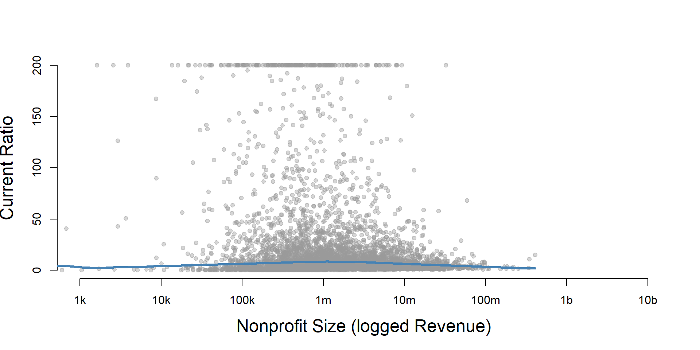
core2 %>%
filter( ! is.na(rev.q) ) %>%
ggplot( aes(currentratio) ) +
geom_density( alpha = 0.5, fill="blue" ) +
labs( title="Nonprofit Size (logged revenues)" ) +
xlab( variable.label ) +
facet_wrap( ~ rev.q, nrow=3 ) +
theme_minimal( base_size = 22 ) +
theme( axis.title.y=element_blank(),
axis.text.y=element_blank(),
axis.ticks.y=element_blank() )
## Error in FUN(X[[i]], ...): object 'currentratio' not found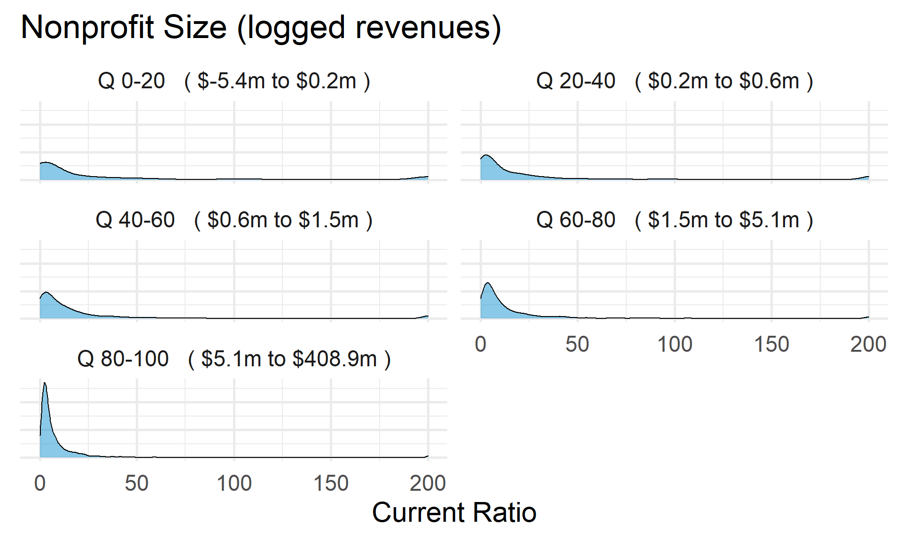
Current Ratio by Nonprofit Size (Net Assets)
ggplot( core2, aes(x = totnetassetend )) +
geom_density( alpha = 0.5, fill="darkorange" ) +
xlim( quantile(core2$totnetassetend, c(0.02,0.98), na.rm=T ) ) +
xlab( "Net Assets" ) +
theme( axis.title.y=element_blank(),
axis.text.y=element_blank(),
axis.ticks.y=element_blank() )
core2$totnetassetend[ core2$totnetassetend < 1 ] <- NA
if( nrow(core2) > 10000 )
{
core3 <- sample_n( core2, 10000 )
} else
{
core3 <- core2
}
jplot( log10(core3$totnetassetend), core3$currentratio,
xlab="Nonprofit Size (logged Net Assets)",
ylab=variable.label,
xaxt="n", xlim=c(3,10) )
## Error in lowess(x2[ok] ~ x1[ok]): invalid input
axis( side=1,
at=c(3,4,5,6,7,8,9,10),
labels=c("1k","10k","100k","1m","10m","100m","1b","10b") )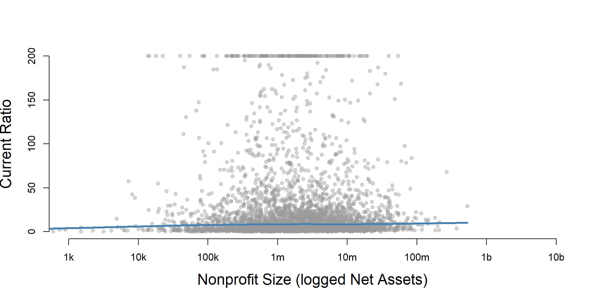
core2$totnetassetend[ core2$totnetassetend < 1 ] <- NA
core2$asset.q <- create_quantiles( var=core2$totnetassetend, n.groups=5 )
core2 %>%
filter( ! is.na(asset.q) ) %>%
ggplot( aes(currentratio) ) +
geom_density( alpha = 0.5, fill="blue" ) +
labs( title="Nonprofit Size (logged net assets, if assets > 0)" ) +
xlab( variable.label ) +
ylab( "" ) +
facet_wrap( ~ asset.q, nrow=3 ) +
theme_minimal( base_size = 22 ) +
theme( axis.title.y=element_blank(),
axis.text.y=element_blank(),
axis.ticks.y=element_blank() )
## Error in FUN(X[[i]], ...): object 'currentratio' not found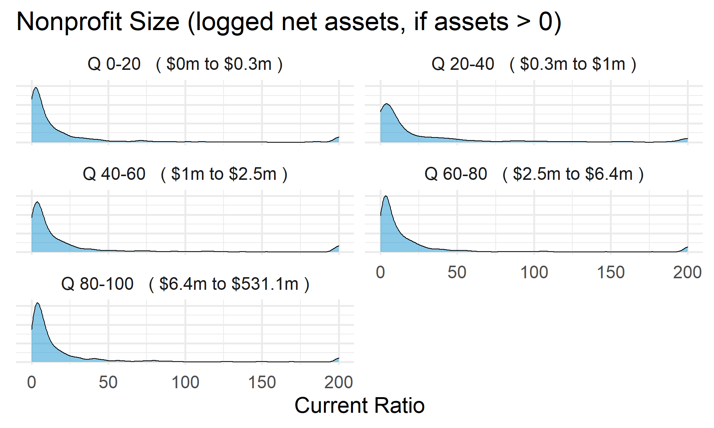
Total Assets for Comparison
core2$totassetsend[ core2$totassetsend < 1 ] <- NA
core2$tot.asset.q <- create_quantiles( var=core2$totassetsend, n.groups=5 )
if( nrow(core2) > 10000 )
{
core3 <- sample_n( core2, 10000 )
} else
{
core3 <- core2
}
jplot( log10(core3$totassetsend), core3$currentratio,
xlab="Nonprofit Size (logged Total Assets)",
ylab=variable.label,
xaxt="n", xlim=c(3,10) )
## Error in lowess(x2[ok] ~ x1[ok]): invalid input
axis( side=1,
at=c(3,4,5,6,7,8,9,10),
labels=c("1k","10k","100k","1m","10m","100m","1b","10b") )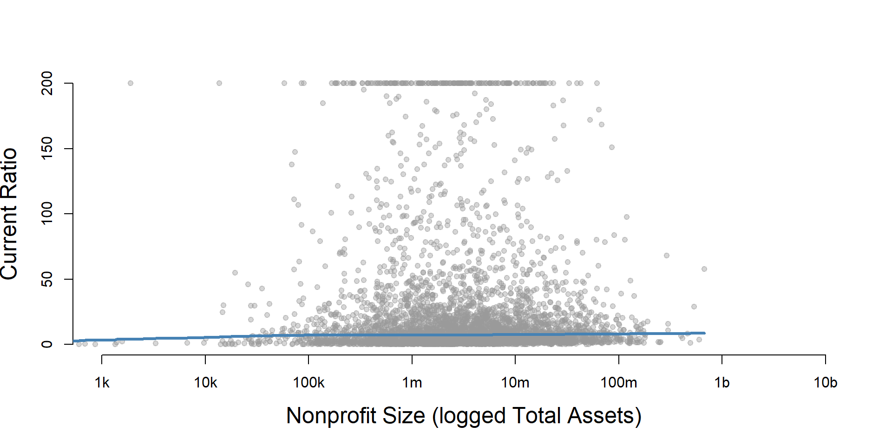
ggplot( core2, aes(x = totassetsend )) +
geom_density( alpha = 0.5, fill="darkorange" ) +
xlim( quantile(core2$totassetsend, c(0.02,0.98), na.rm=T ) ) +
xlab( "Net Assets" ) +
theme( axis.title.y=element_blank(),
axis.text.y=element_blank(),
axis.ticks.y=element_blank() )
core2 %>%
filter( ! is.na(tot.asset.q) ) %>%
ggplot( aes(currentratio) ) +
geom_density( alpha = 0.5, fill="blue" ) +
xlab( "Nonprofit Size (logged total assets, if assets > 0)" ) +
ylab( variable.label ) +
facet_wrap( ~ tot.asset.q, nrow=3 ) +
theme_minimal( base_size = 22 ) +
theme( axis.title.y=element_blank(),
axis.text.y=element_blank(),
axis.ticks.y=element_blank() )
## Error in FUN(X[[i]], ...): object 'currentratio' not found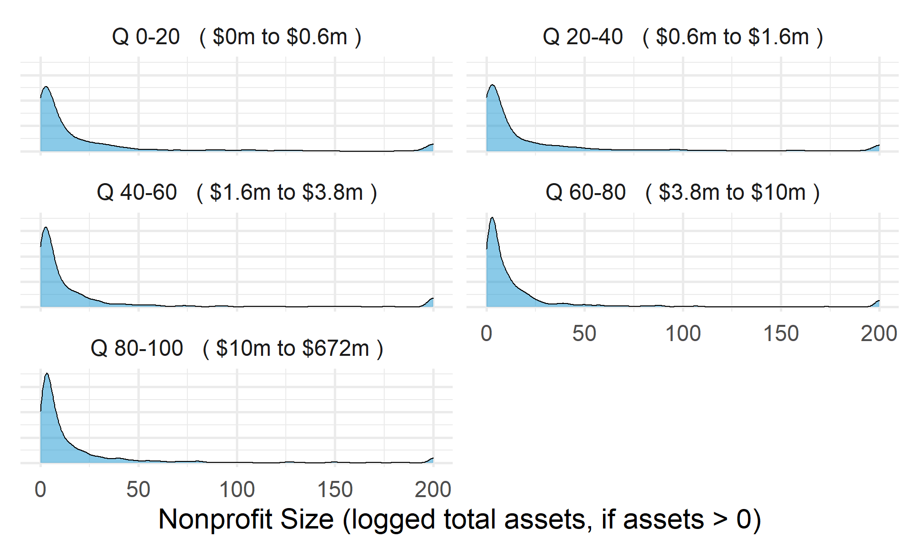
Current Ratio by Nonprofit Age

core2$AGE[ core2$AGE < 1 ] <- NA
if( nrow(core2) > 10000 )
{
core3 <- sample_n( core2, 10000 )
} else
{
core3 <- core2
}
jplot( core3$AGE, core3$currentratio,
xlab="Nonprofit Age",
ylab=variable.label )
## Error in lowess(x2[ok] ~ x1[ok]): invalid inputcore2 %>%
filter( ! is.na(age.q) ) %>%
ggplot( aes(currentratio) ) +
geom_density( alpha = 0.5, fill="blue" ) +
labs( title="Nonprofit Age" ) +
xlab( variable.label ) +
ylab( "" ) +
facet_wrap( ~ age.q, nrow=3 ) +
theme_minimal( base_size = 22 ) +
theme( axis.title.y=element_blank(),
axis.text.y=element_blank(),
axis.ticks.y=element_blank() )
## Error in FUN(X[[i]], ...): object 'currentratio' not found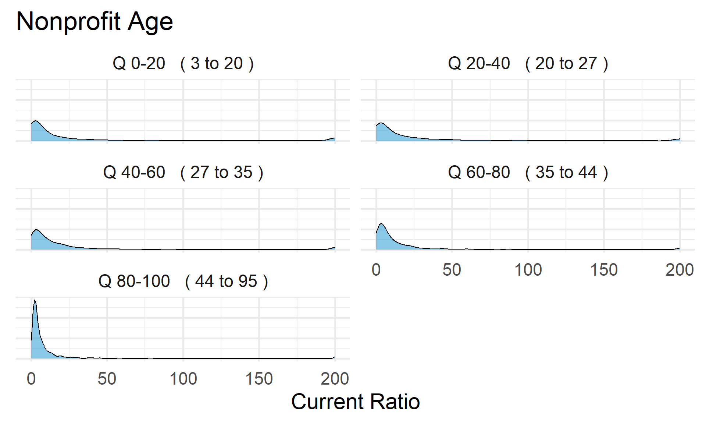